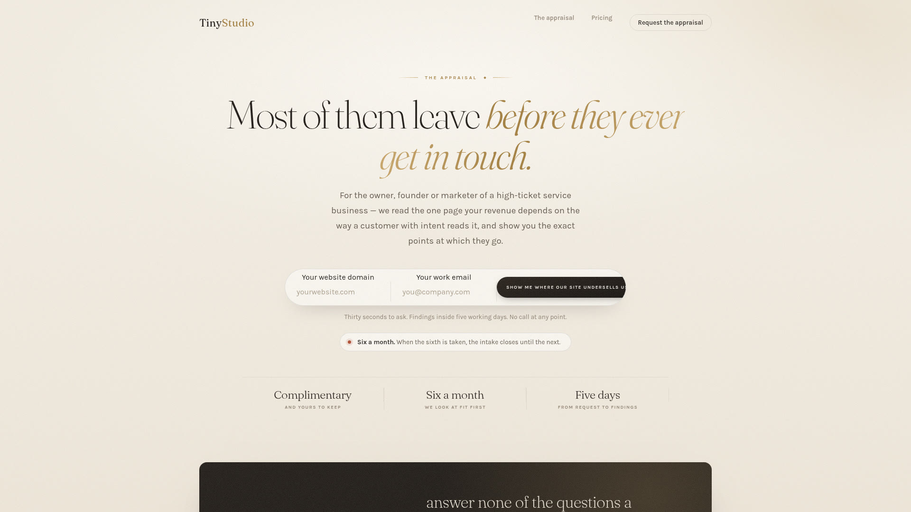
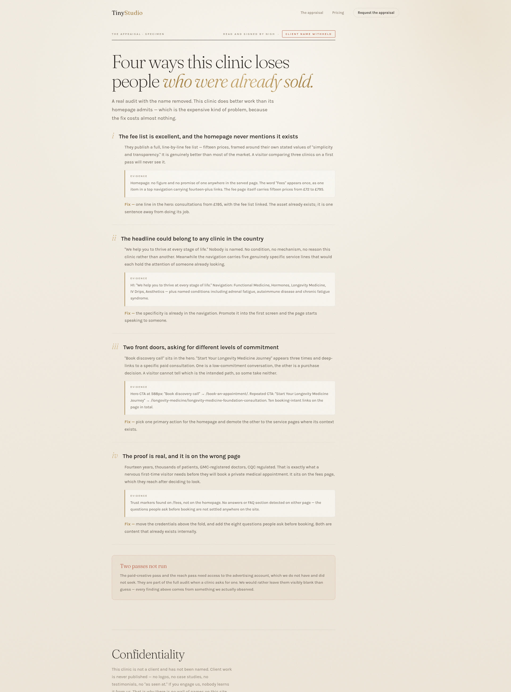

TinyStudio
A free appraisal of your
high-ticket service website.
For the owner, founder or marketer. We read the one page your revenue depends on, and show you where buyers go.
The problem
Most of them leave
before they ever get in touch.
The appraisal reads your page the way a customer with intent reads it.

A real specimen
Each fault named.
The fix beside it.
The specimen is a real audit of a clinic homepage, with the client's name removed.

What you get
Free
and yours to keep
Six a month
done by hand
Five days
request to findings
No call at any point.
Reviewed by a person
Read and
signed by Nish.
Not autonomous software. The appraisal is yours to hand to any developer, including one who is not us.
One next step
Show me where our site
undersells us.
Request the appraisal
tinystudio.io